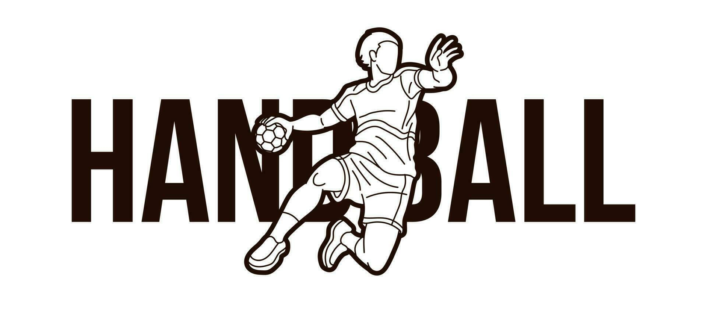

Experiencie a emoção do handball!
O handebol, também conhecido como handball, é um esporte coletivo que envolve duas equipes de sete jogadores cada (seis jogadores de linha e um goleiro), que se enfrentam em uma quadra retangular com o objetivo de marcar gols no gol adversário. O jogo é caracterizado por passes rápidos, dribles e arremessos a gol, sendo jogado em alta velocidade.
O handball é conhecido pelo seu jogo rapido, o que o torna extremamente emocionante para aqueles que estão assistindo e principalmente para aqueles que estão jogando
O handball exige forte trabalho em equipe e comunicação entre os jogadores, promovendo um sentimento de camaradagem e colaboração.